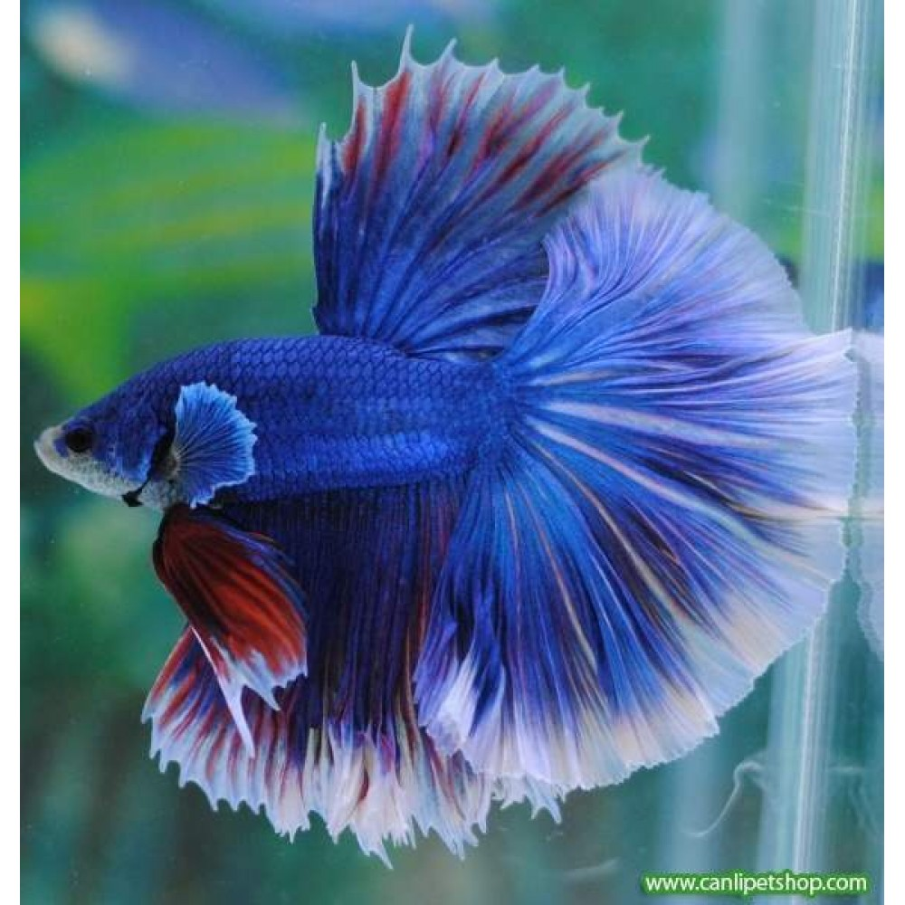

Beta balığı (Betta splendens), Güneydoğu Asya kökenli, özellikle Tayland ve Kamboçya’da doğal olarak yaşayan tropikal tatlı su balığıdır. Uzun ve renkli yüzgeçleri, parlak mavi, kırmızı, mor ve yeşil tonlarıyla akvaryum hobisinin en göz alıcı türlerinden biridir. Erkek beta balıkları özellikle gösterişli yüzgeçleriyle dikkat çeker. Bu tür, 24–28°C sıcaklıkta, hafif asidik veya nötr pH değerine sahip sularda sağlıklı şekilde yaşar. Küçük akvaryumlarda bile beslenebilir, ancak suyun temizliği ve düzenli bakımı çok önemlidir. Beta balıkları labirent organı sayesinde atmosferdeki oksijeni doğrudan soluyabilir, bu nedenle düşük oksijenli sularda da yaşayabilirler. Davranış açısından beta balıkları bölgeci ve kavgacı olabilir. Özellikle erkekler aynı akvaryumda bulundurulmamalıdır, çünkü birbirleriyle kavga ederek zarar verebilirler. Dişiler ise daha uyumlu olup grup halinde beslenebilir. Beslenmeleri çeşitlidir: pul yemler, canlı yemler (örneğin artemia, kan kurdu) ve protein ağırlıklı diyetle sağlıklı gelişim gösterirler. Uygun koşullarda 2–4 yıl yaşayabilirler. Üreme döneminde erkek beta balığı köpük yuva yapar ve yumurtaları bu yuvada korur.